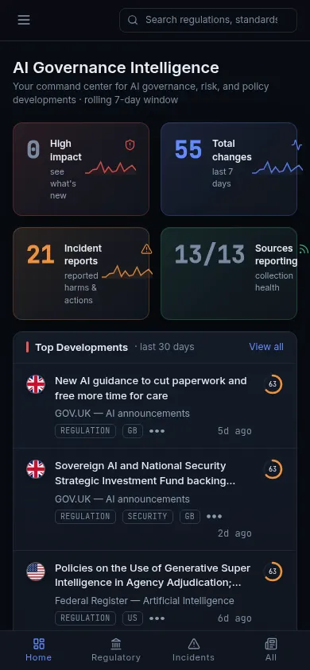
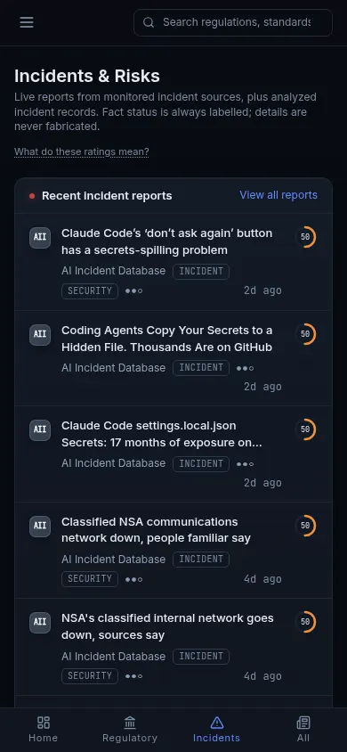
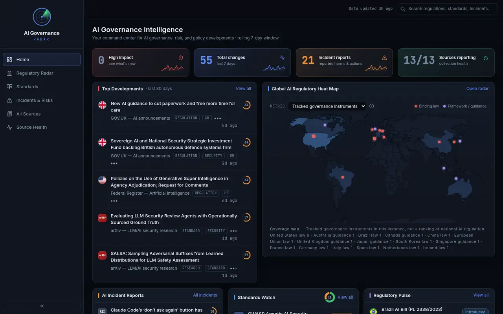
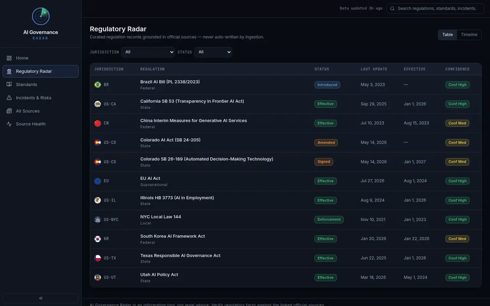

Every page of the live site at laptop size (1440×900), and the main ones at phone size (390×844), checked against the code and the published data. Findings first, then a proposed home screen and a visual direction that keeps the ops-console discipline without losing the page's character.
The valuable part of this product is the 23 hand-checked records, and the home page mostly shows something else. Four of its seven modules, including the first thing on the page and its whole left column, are driven by the automated feed. This week that feed is 55 items, of which 3 came from a government source. The curated laws sit in the third row, cut off on a laptop, sorted A to Z.
The site's nearest legal date is 7 days out. It exists only as a sentence of grey 11px note text on one detail page. The first thing the home page shows instead is a red "High impact" counter. It reads 0 today, and once it moves it will count how many government notices arrived, whatever they say.
The build quality is good and the detail pages are strong. I would keep the page structure, fix nine defects, rebuild Home around dates and record changes, and restyle the site to sit between today's polished SaaS look and a flat console: flatter and tighter, with colour and separation kept where they help you skim. Colour, corners and type are quick to change because they live in a token file. Density and the row clutter need a pass over each page.
One line per page. Detail and evidence follow.
| Surface | Verdict | Why |
|---|---|---|
| Home | ■ REWORK | Answers "what did the collectors pick up", when the question is "what do I need to know or do". |
| Regulatory Radar | ▲ FIX | Best content on the site. Sorted alphabetically, no next-date column, and the phone view hides status and dates. |
| Record detail | ● KEEP | The strongest page. Its upcoming dates are buried in a notes paragraph. |
| Standards | ▲ FIX | Twelve records shown as twelve tall cards. Three of five counters read zero. |
| Incidents & Risks | ▲ FIX | The automated feed sits above the curated write-ups, and one outage fills five of its eight rows. |
| All Sources | ▲ FIX | Fine as a firehose. Press items about shopping and funding rounds sit level with government notices. |
| Source Health | ▼ DEMOTE | A nav slot for a page that says "13 of 13 fine". Belongs in a status strip. |
| Search | ● KEEP | Works. Add a keyboard shortcut. |
| Phone layout | ■ BROKEN | Counter cards overlap, table columns are off-screen, the legal notice is hidden. |
| About / methodology | ○ MISSING | A public portfolio piece with no author, no repo link and no explanation of its scores. |
None of these needs a design decision. File pointers are relative to frontend/src unless marked.
The threshold is 70. An item reaches exactly 70 when it is tagged regulation (30), comes from a government source (20), is new (5) and is collected within 48 hours of publication (15). The score is set once, at collection, and never revisited. The counter reads 0 today only because the public database was first filled this morning, when everything was already older than 48 hours, so the top score is 63. From the next run on, almost every government notice will be collected in time, score 70 and keep it. The UK care-paperwork guidance would have qualified. The red counter will then show how many government notices arrived this week, whatever they say.
High impact, Total changes and Incident reports all receive one shared series and tint it red, blue and orange. They read as three trends. There is one.
Brazil, California, China, Colorado, Colorado. The EU AI Act, the largest record on the site, never appears on Home.
The claim is untrue, and red is the site's own colour for critical. The design document specifies green for this dot.
The sparkline runs through the label, labels wrap to four lines and the last card's icon is clipped. Already logged as T-035.
The table has a fixed 760px minimum inside a scrolling box, with no cue that it scrolls. A phone reader sees a list of names. T-035.
The footer that carries it only renders from tablet width up.
The data holds ten separate rows about a single NSA network outage. Five of the eight rows on the Incidents page are that story. Grouping only compares items from different sources, and all ten come from the same one, so each report gets its own row.
A title shows a raw &. "Last update" on the law table falls back to the introduction date, so Brazil shows May 3, 2023 although its timeline runs to 2025. Curated incidents are dated "1y ago" and "2y ago" where a citable date belongs. The phone tab bar has no Standards entry. The page has no description or share-preview tags, so a link posted anywhere shows a bare title.


The site holds two kinds of content. There are 23 curated records (11 laws, 12 standards and frameworks), each checked against official sources on 25 Nov. They are scarce, trustworthy and the reason anyone would cite this site. Then there is the automated feed: plentiful, cheap and mostly noise.
Home gives the feed four of its seven modules, including the counters that open the page and the whole left column. This is what a 1440×900 laptop shows before any scrolling.

1 2 3 4 5 6 7The impact score adds points for category, source type and freshness. It never reads the content. Most items therefore land on a handful of identical scores, and "top developments" becomes "newest items from a government feed". The feed's own detail drawer explains this honestly, which is to its credit. The problem is giving that number the top-left of the home page.
| Score | Items |
|---|
The EU AI Act record says new prohibitions and an Article 50(2) deadline apply from 2 Dec 2026, seven days after this review. That date appears once, inside a paragraph of small grey text at the bottom of the record's side panel. Colorado SB 26-189 takes effect on 1 Jan 2027, 37 days out. Home shows it as "eff. Jan 1, 2027" in 9.5px type, level with laws that took effect years ago.
For a person who has to keep up with compliance dates, those two lines are the product. They should be the largest things on the page.
Dates first, then what changed in the records, then the state of every law, then the feed, filtered to primary sources. Every row below is a real record from today's build. The map leaves Home. This version is drawn in the revised visual direction described in the next section.
The first version of this section proposed a fully flat console. Your objection to it is fair. It removed the fluff, and with it the cues that let an eye find its place: separated panels, coloured status, a bright title over quiet detail. Dense text at one weight is hard to skim however tidy it is. It also overshot the references: Palantir and Anduril interfaces are flat and dense, but they still use coloured status, shaded panel headers and clear panel edges.
The current site has the opposite problem. It has plenty of cues, but many of them carry nothing: gradients, glow, a score ring that reads nearly the same on every row. The revised direction sits between the two. Colour, shape and size stay wherever they encode something, such as how close a date is, what stage a law has reached, or which panel you are in. They go where they only decorate.
The same three laws in all three languages:
| Element | Now | Flat console | Balanced |
|---|---|---|---|
| Corners | 12px cards, 8px pills | 2px or square | 6px panels, 4px chips |
| Surfaces | Gradient, drop shadow, inner highlight, radial wash | One flat fill, hairlines only | Flat fills at three levels: page, panel, panel header |
| Separation | Floating cards with wide gaps | Shared 1px lines, no gaps | Separate panels with 12px gaps |
| Status | Tinted pill, plus ring, dots and tags on the same row | Uppercase mono word | One filled chip per row, plus the stage track for laws |
| Row text | Title and metadata close in weight | Everything small, much of it uppercase mono | Bright 13.5px title, quieter detail line, mono date column |
| Scores | Impact ring and confidence dots on every row | Drawer only | Drawer only |
| Jurisdiction | 24px circular flag | Code only | Small square-cornered flag with the code |
| Colour | Blue accent used for links, nav, map and charts | Status colours only | Status colours, one link colour, and a marker colour per panel |
| Key numbers | Four tinted counter cards with sparklines | Plain cells | Tiles, tinted only when a date is close |
| Time | "2d ago", "1y ago" | Dates and T-minus codes | Dates and plain day counts ("37 days") |
| Row height | 40 to 60px | 28 to 34px | 36 to 48px |
| Motion | Rotating logo, pulsing dot, hover lift | None | Logo sweep only |
tailwind.config.js, lib/tokens.ts and styles/index.css. That part is quick./ to focus search. It suits the console and you will use it daily.
| Idea | Call | Reason |
|---|---|---|
| Milestones on each record | ● DO FIRST | A dated list per law in place of a single "compliance deadline". It unlocks the date board, countdowns and the calendar feed. Part of T-040. |
| About and methodology page | ● DO | Who built it, the repo, how scores work, how records are checked, the corrections made on 25 Nov. Phone users get no hover tooltips, so this is their only explanation. T-037. |
| Calendar and change feeds | ● DO | A .ics file of dates ahead and an RSS or JSON feed of record changes, written by the existing export. People and agents can subscribe, and it needs no server. |
| Corrections log | ● DO | A public list of what changed in the records and when. Sites that show their corrections are trusted more. |
| Smaller page | ▲ SOON | 3.6 MB of script, much of it map data and flag artwork. Load only the flags the records use, and a lighter map file. T-036. |
| Group reports by incident | ▲ SOON | Needs the incident database's own incident number, if the feed carries it. Check before designing around it. |
| Retune the impact score | ▼ LATER | Once Home stops leading with it, the score only orders the feed. Moving the threshold would change how often the counter moves without making it mean more. |
| Watchlist, brief page, light theme, more map | ✕ SKIP | All previously removed or parked for reasons that still hold at 23 records. |
No decisions needed. For D1, remove the counter now; it gets replaced in pass 3. This pass alone makes the phone view presentable.
Add the dated list to the record model and fill it for the eleven laws from the notes already verified on 25 Nov. Each milestone needs its source, under the same rule as every other legal fact.
Date board, record changes, laws by stage, primary-source feed, status strip. Record the decision.
Tokens first, then the six components, then a pass over each page at 1440 and 390 wide. Rewrite DESIGN_SYSTEM.md to match.
Then link it from mattguenther.com.
| Decision | My recommendation |
|---|---|
| Revise the approved "alive" direction? | Yes, to the balanced version above. It drops the fluff and keeps the character. |
| Side rail or top tabs? | Top tabs. Six links, and the tables want the width. |
| Accent colour | The cool cyan used here for links, with amber reserved for dates that are close. Amber as the accent would blur that meaning. |
| Map | Off Home, smaller, onto the Laws page. |
| Flags and monograms | Keep the flags, smaller and square-cornered, beside the code. Replace the coloured source monograms with plain code tiles. |